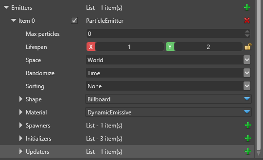

Emitters
Beginner Artist Programmer
Particle emitters manage how many particles are in an effect, how they appear, move, and disappear, and how they are drawn. For example, a fire effect might be composed of three separate particle effects: flames, embers, and smoke. Each of these effects is managed by a separate particle emitter.
Emitters contain further controls such as spawners, initializers, and updaters.

| Property | Description |
|---|---|
| Emitter name | A unique identifier for the particle emitter |
| Max particles | The maximum number of active particles the emitter can manage at a given time, based on the particles' spawn rate and lifespan. If you leave this at 0, Stride uses its own estimate. |
| Lifespan | New particles have a lifespan between these two values |
| Space | Particles in world space remain in the world space when the emitter moves away from them. Particles in local space always exist in the emitter's local coordinate system; if the emitter moves, rotates, or scales, the particles move with it. |
| Randomize | Particles use pseudo-random values for everything which requires randomness. If you set this to Time, different emitters generate different random numbers. If you set it to Fixed, different instances of the same effect behave identically. Position acts as Fixed but is different for different positions. |
| Draw priority | This controls the order in which particles are drawn. Higher numbers have higher priority. For example, if this particle effect has a draw priority of 2, it will be drawn after a particle effect with a draw priority of 1. |
| Sorting | Choose if the articles should be drawn by depth (away from the camera), age (particles spawned first are drawn on top), order, or in no order none (good for additive particles, which need no sorting). |
| Shape | Specifies the shape used to draw the particles |
| Material | Specifies the material used to render the particles |
| Spawners | Spawners control how quickly new particles are emitted. To emit particles, emitters must have at least one spawner. |
| Initializers | Initializers set the initial values of new particles |
| Updaters | Updaters update living particles every frame, changing their attributes. Updaters execute in the order in which they appear on the list. |